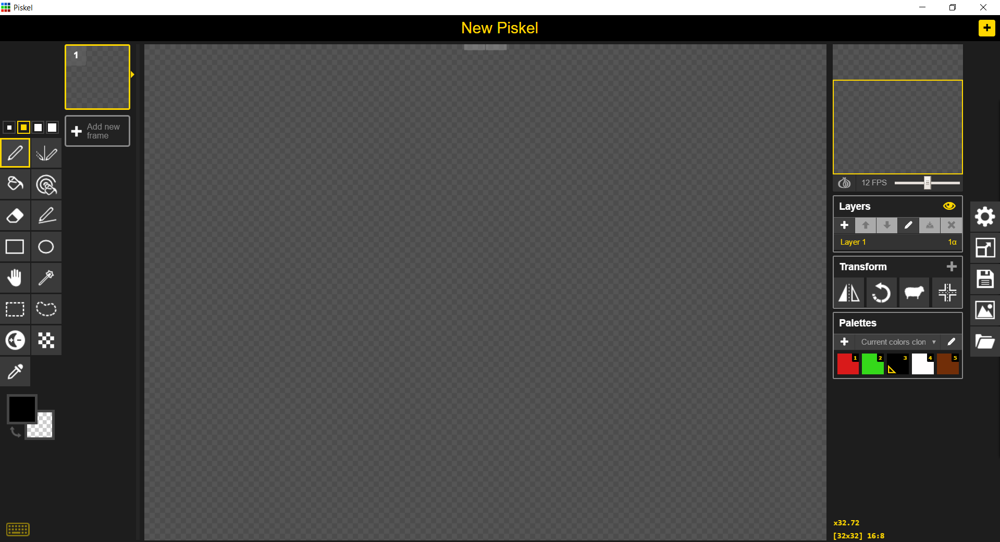
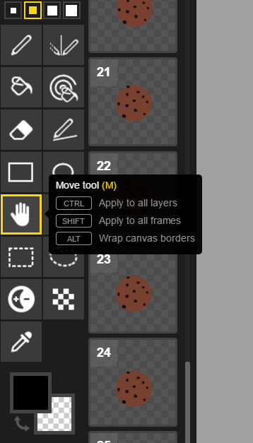
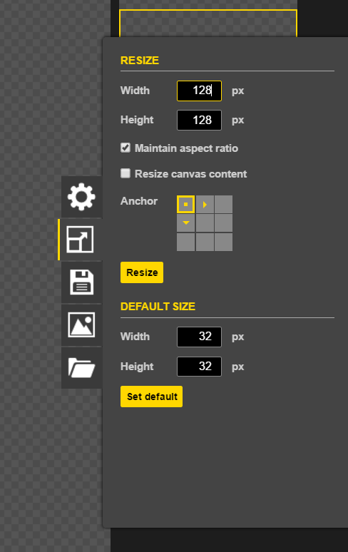
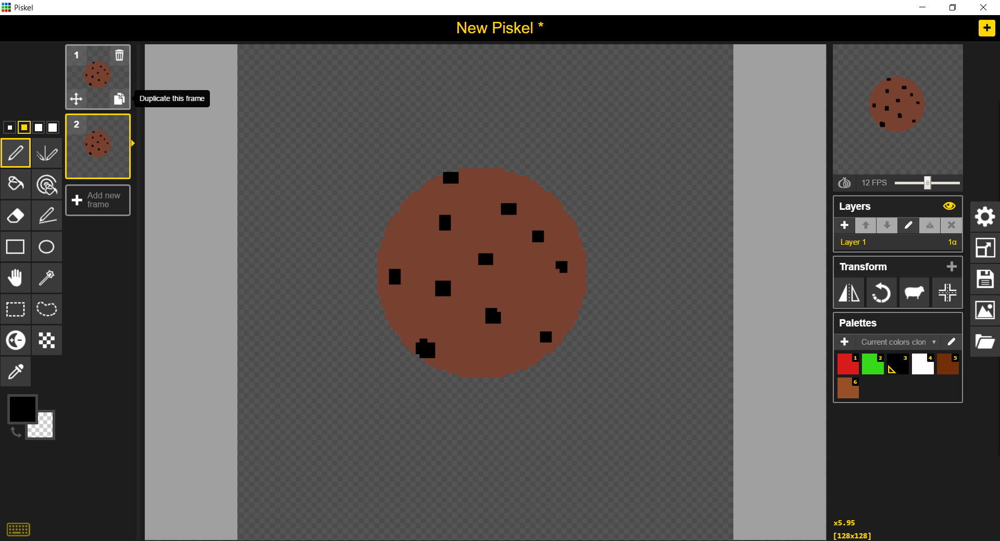
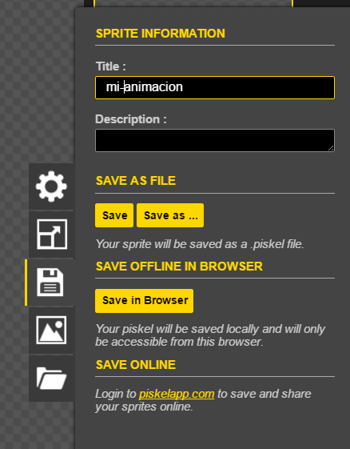
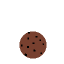

Creando animaciones en Piskel
Hoy veremos cómo realizar una animación sencilla desde cero, utilizando el programa Piskel. Comenzaremos por recorrer el entorno, conocer algunas configuraciones y sus herramientas, luego haremos un dibujo sencillo de una cookie y ¡la haremos saltar!
Comencemos – La plataforma
Lo primero que verán arriba a la izquierda es un cuadro numerado con el botón ‘Add new frame’ debajo. Este será nuestro cuadro de trabajo y luego agregaremos y/o duplicaremos para crear las animaciones. Sobre el costado izquierdo se encuentran las herramientas de dibujo que quizá encuentren conocidas: el lápiz (para dibujar por pixel), la goma, el balde de relleno, la herramienta rectángulo y la círculo. Además, tenemos las herramientas de selección que son realmente muy útiles, selección rectangular, selección mágica, selección de formas, todas ellas las veremos en un próximo tutorial.
Del costado derecho, se ven los cuadros de capas (layer), transformaciones (transform) y colores (palette). A la derecha de estos se encuentra el menú de la aplicación, de donde se podrá crear archivos nuevos, abrir uno anterior, guardar o exportar. Por último, arriba a la derecha hay un pequeño cuadro animado que nos irá mostrando el avance de nuestro trabajo, es una vista en miniatura de la animación.
¡A dibujar!
Lo primero que vamos a hacer es agrandar el espacio de trabajo. Los proyectos nuevos se crean con un tamaño de 32 x 32 px (pixeles o puntos), si les parece bien pueden dejarlo así, pero los dibujos quedarán muy toscos. Nosotros siempre lo llevamos a un valor más grande, por ejemplo 128x128. Eso se hace desde este menú:
Ahora sí, es momento de crear. Para hacer la cookie, vamos a iniciar con la herramienta círculo. La elegimos desde el menú de la izquierda y hacemos un circulo grande que será nuestra cookie. Luego elegimos el balde para pintar relleno, del sabor que más nos guste (perdón, era color…) y seguido a eso podemos usar el lápiz para agregarle chips de chocolate.
Ahora ya tenemos nuestro primer cuadro (frame) y será nuestro modelo para todos los demás. Lo que tenemos que hacer es click en el botón de duplicar cuadro (duplicate this frame) y nos aparecerá un nuevo cuadro con nuestra cookie dibujada.
Entonces ahora, elegimos la herramienta mano para hacer la magia. Haciendo click en cualquier parte de la pantalla, movemos la cookie un poco (sólo un poco) hacia alguna dirección. Seguido, le damos al botón de duplicar cuadro, pero NO al que usamos antes, sino al de nuestro nuevo cuadro, así se nos copia el último dibujo que tenemos. Otra vez, con la herramienta mano, movemos la cookie en alguna dirección. Vamos a repetir este paso todo lo que queramos, hasta tener todos los dibujos para una animación completa. Lo ideal, es no menos de 30 cuadros, pero podemos ver cómo va quedando la animación en el cuadro de vista previa arriba a la derecha. De esa forma, cuando estemos conformes podremos parar. También se puede extraer la vista previa a una ventana mas grande
¡¡Y MAGIA!! ¡Ya tenemos terminada nuestra cookie rebotando! Sólo nos queda guardarlo como animación en la PC. Para eso, vamos a ir al ícono del diskette (pregúntenle a los papás qué es eso) y vamos a elegir la opción “Save”; esta opción nos guarda una archivo tipo “.piskel”, esto es el proyecto completo, quiere decir que lo vamos a poder seguir trabajando con Piskel.
Luego vamos al ícono de imagen (el de las montañas) y elegimos la opción “export -> download as an animated gif”, elegimos el nombre ¡ y ya está! Nuestra animación ya se guardó como gif y podemos compartirlo con quien querramos.
Ahora solo queda animarse y seguir creando, todo lo que salga de nuestra loca imaginación: